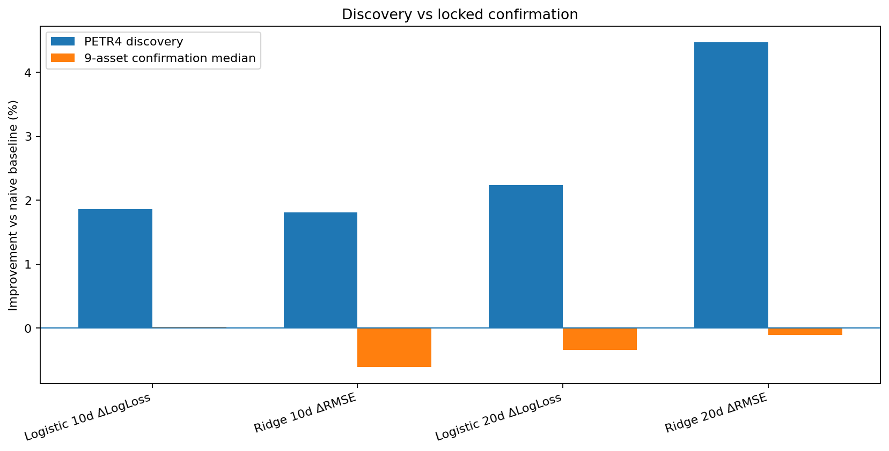
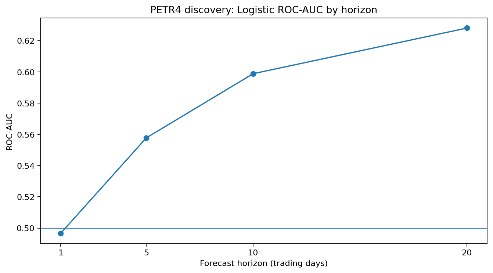
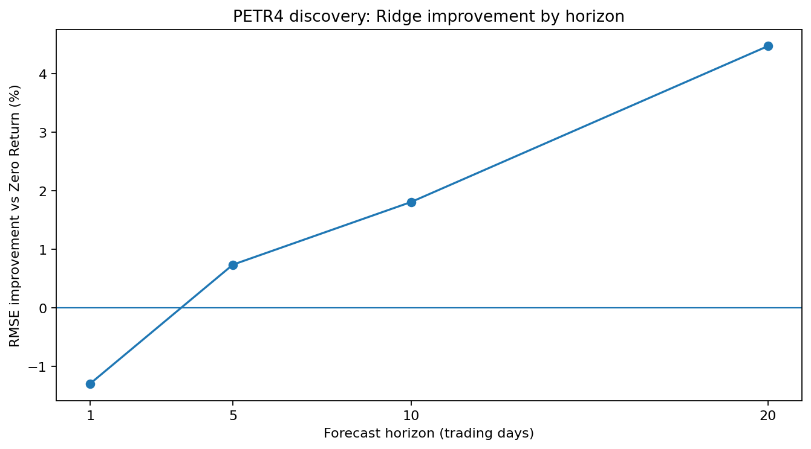
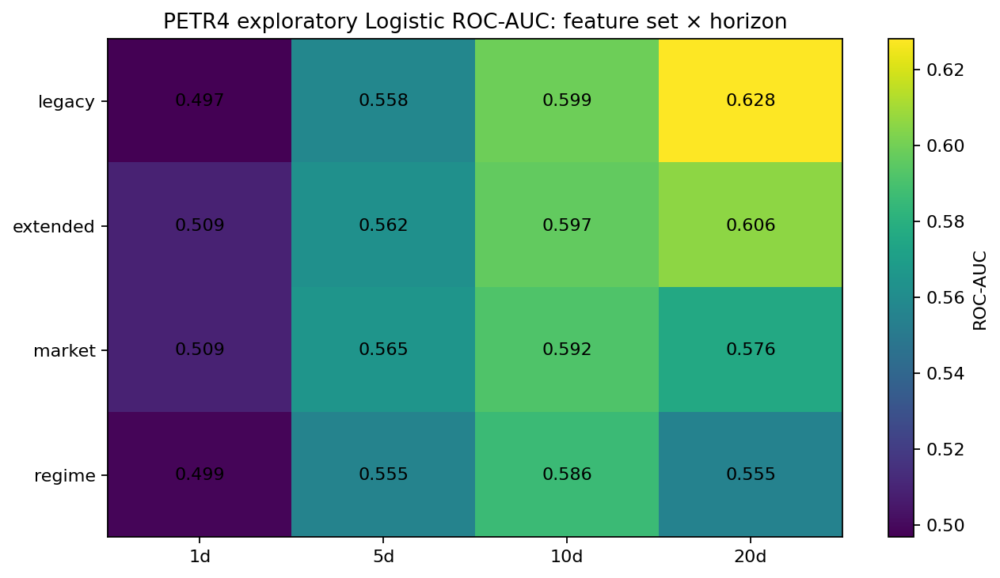
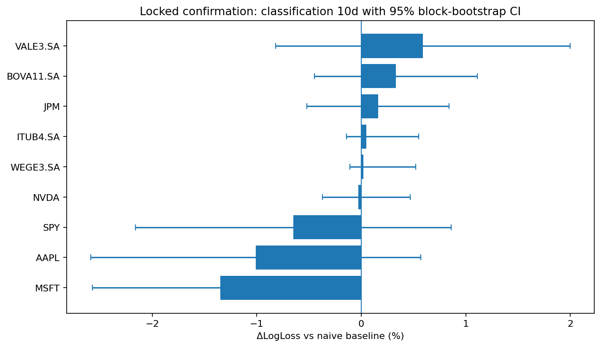
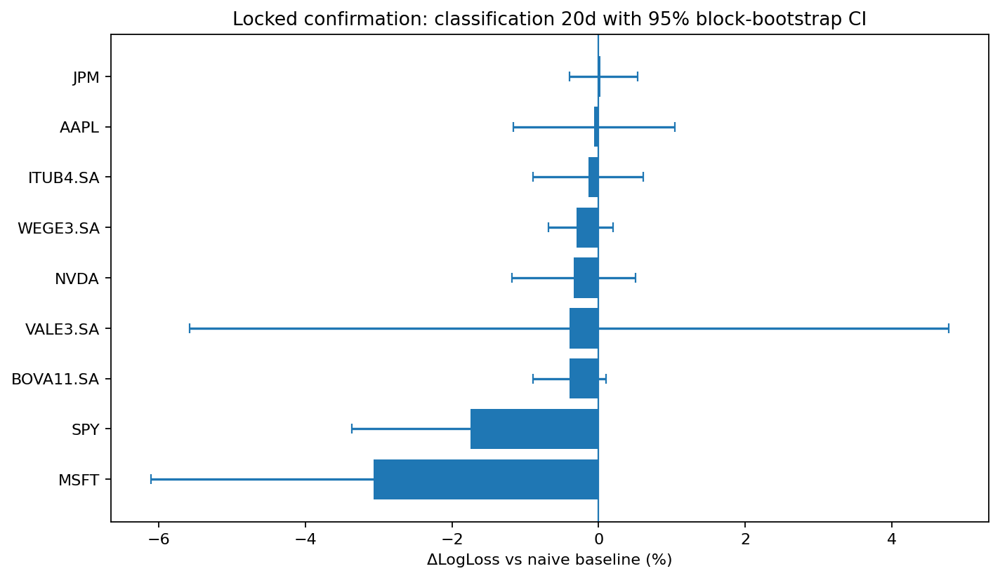
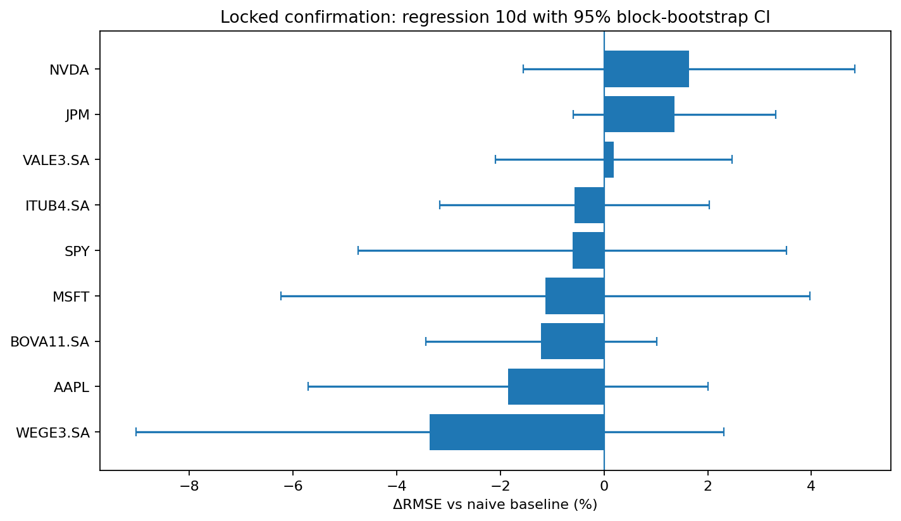
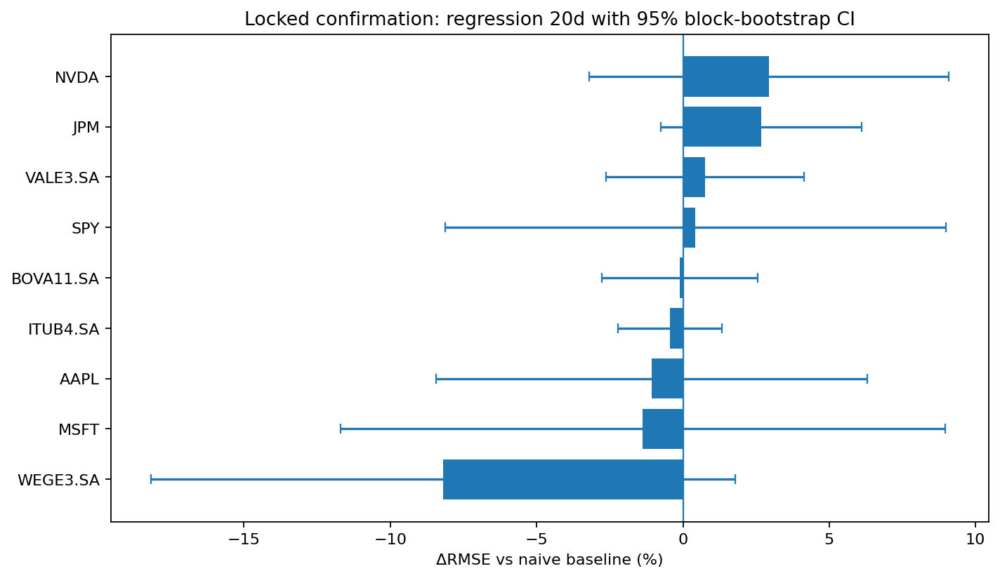
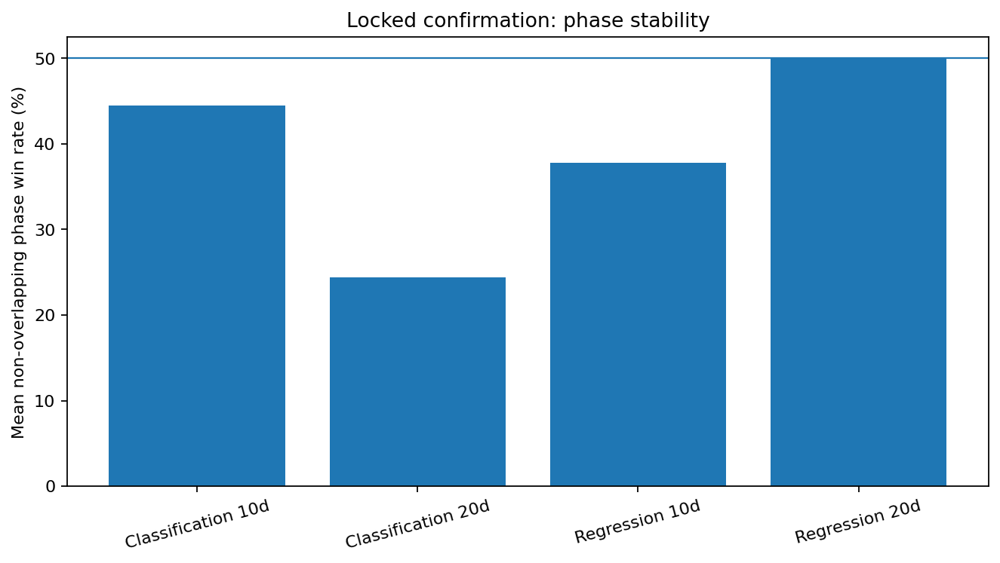
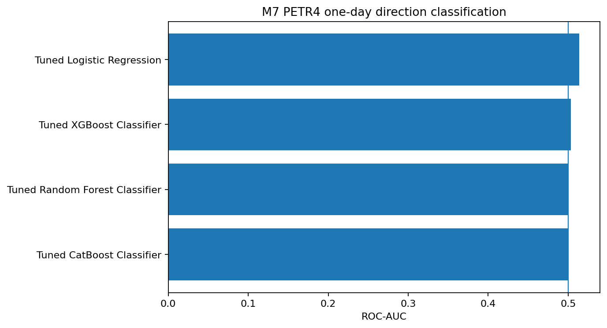

Executive findings
- Discovery: PETR4.SA 20d Logistic reached AUC 0.628 and +2.24% Log Loss improvement versus the prior.
- Discovery: PETR4.SA 20d Ridge reached +4.47% RMSE improvement versus Zero Return.
- Locked confirmation: 20d Logistic won on 1/9 assets; median improvement -0.34%.
- Locked confirmation: 20d Ridge won on 4/9 assets; median improvement -0.11%.
- Confirmatory inference: 0 locked asset-level result(s) survived primary HAC/FDR significance at 5%.
- Bootstrap robustness: 0 asset/candidate result(s) had a fully positive 95% primary-improvement interval.
Interpretation rule: a configuration is not promoted from one attractive ticker. Confirmation evidence is evaluated across assets, HAC/FDR inference, block-bootstrap intervals and non-overlapping phase stability.
Discovery candidates
| task | horizon | model | log_loss_improvement_vs_prior_pct | roc_auc | rmse_improvement_vs_zero_pct | directional_accuracy |
|---|---|---|---|---|---|---|
| classification | 1 | Tuned Logistic Regression | +0.02% | 0.497 | N/A | N/A |
| classification | 5 | Tuned Logistic Regression | +0.44% | 0.558 | N/A | N/A |
| classification | 10 | Tuned Logistic Regression | +1.86% | 0.599 | N/A | N/A |
| classification | 20 | Tuned Logistic Regression | +2.24% | 0.628 | N/A | N/A |
| regression | 1 | Tuned Ridge | N/A | N/A | -1.29% | 50.48% |
| regression | 5 | Tuned Ridge | N/A | N/A | +0.74% | 55.32% |
| regression | 10 | Tuned Ridge | N/A | N/A | +1.81% | 58.89% |
| regression | 20 | Tuned Ridge | N/A | N/A | +4.47% | 64.92% |
Locked confirmation
| task | horizon | model | n_assets | primary_win_count | primary_win_rate | primary_win_sign_test_p | mean_primary_improvement_pct | median_primary_improvement_pct | primary_hac_fdr_sig_count | primary_bootstrap_positive_count | mean_phase_win_rate |
|---|---|---|---|---|---|---|---|---|---|---|---|
| classification | 10 | Tuned Logistic Regression | 9 | 5 | 55.56% | 0.5000 | -0.21% | +0.02% | 0 | 0 | 44.44% |
| classification | 20 | Tuned Logistic Regression | 9 | 1 | 11.11% | 0.9980 | -0.71% | -0.34% | 0 | 0 | 24.44% |
| regression | 10 | Tuned Ridge | 9 | 3 | 33.33% | 0.9102 | -0.62% | -0.61% | 0 | 0 | 37.78% |
| regression | 20 | Tuned Ridge | 9 | 4 | 44.44% | 0.7461 | -0.49% | -0.11% | 0 | 0 | 50.00% |
Discovery vs locked confirmation

Discovery: Logistic AUC by horizon

Discovery: Ridge RMSE improvement by horizon

Exploratory feature-set × horizon map

Locked confirmation: classification 10d across assets

Locked confirmation: classification 20d across assets

Locked confirmation: regression 10d across assets

Locked confirmation: regression 20d across assets

Locked confirmation: non-overlapping phase stability

M7 one-day classification benchmark

Provenance
This report was built from 4 persisted experiment run(s).
- m7: /mnt/data/stock-ml-lab-milestone-10/examples/m9_snapshot/m7
- m8_1: /mnt/data/stock-ml-lab-milestone-10/examples/m9_snapshot/m81_confirmation
- m8: /mnt/data/stock-ml-lab-milestone-10/examples/m9_snapshot/m8_features
- m8: /mnt/data/stock-ml-lab-milestone-10/examples/m9_snapshot/m8_stage_a